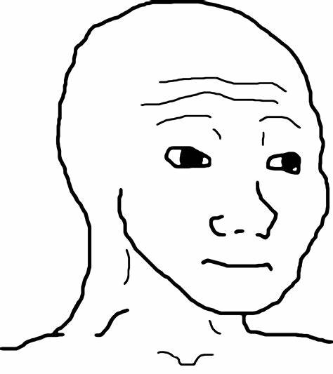

COMP_MAN
COMP_MAN
Вояк
Во́як (пол. Wojak, дос. «воїн, солдат») , також відомий як той, хто відчуває — популярний інтернет-мем. Малюнок, який зображає сумне обличчя чоловіка, використовується для загального висловлення емоцій, таких як смуток, жаль і самотність. Часто поєднується з Жабкою Пепе.
Спочатку слово «Wojak» було ніком польського користувача англомовної секції /int/ іміджборди Krautchan. Він почав постити зображення, яке згодом успадкувало його ім'я, частіше за все доповнюючи його дописом «Це почуття, коли Х». Мем швидко почав розповсюджуватись по інших іміджбордах, в тому числі на 4chan, де у 2011 році здобуло популярності зображення двох «Вояків» в обіймах, з підписом «Я розумію це почуття, бро». Образ Вояка також пов'язують з такими фразами, як «це почуття», або «це почуття, коли». Подальші варіанти мемів часто поєднують його з Жабкою Пепе. В 2016 році з'являється видозмінена варіація Вояка, яка використовувалася як насмішка над інтеллектуальними здібностями опонента. Після обвалу курсу криптовалют 2018 року, рожеві Вояки, які відображали гнів, були використані трейдерами в секції /biz/ 4chan для вираження власного обурення з приводу втрати.